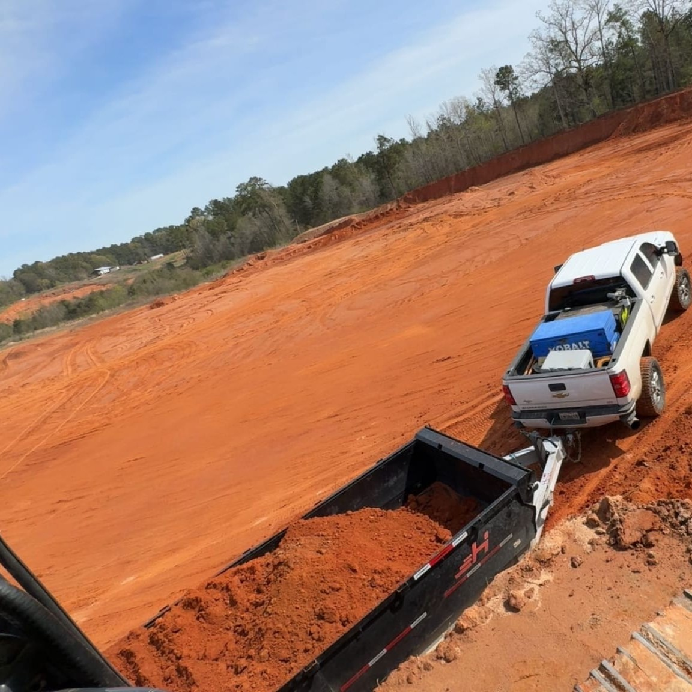
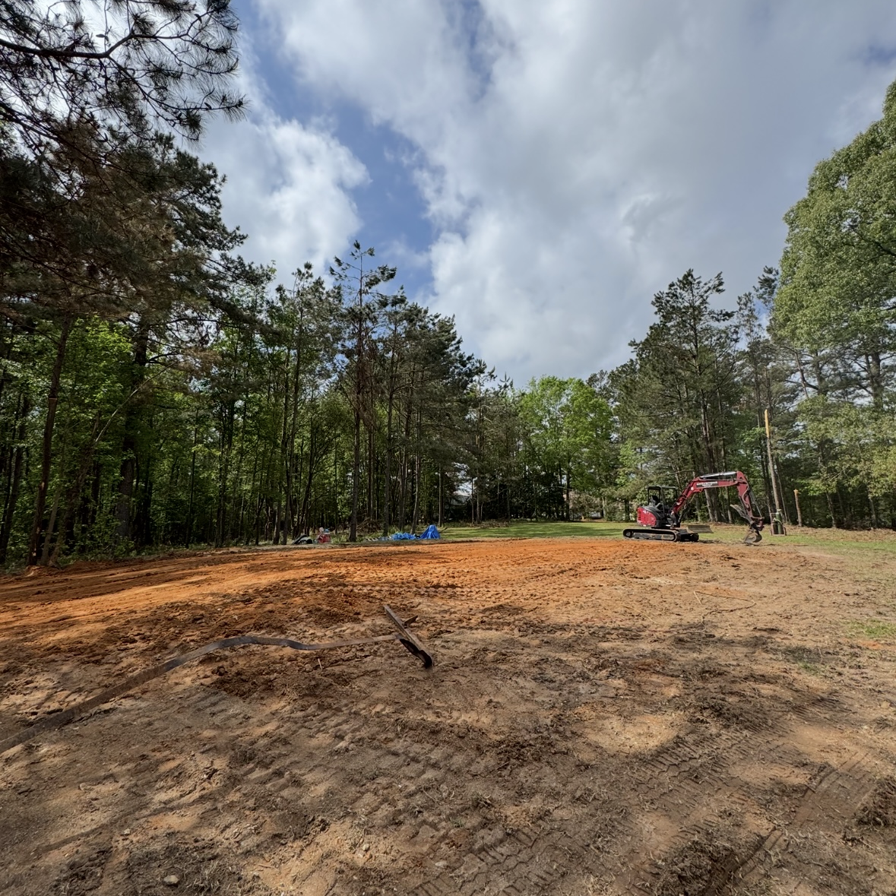
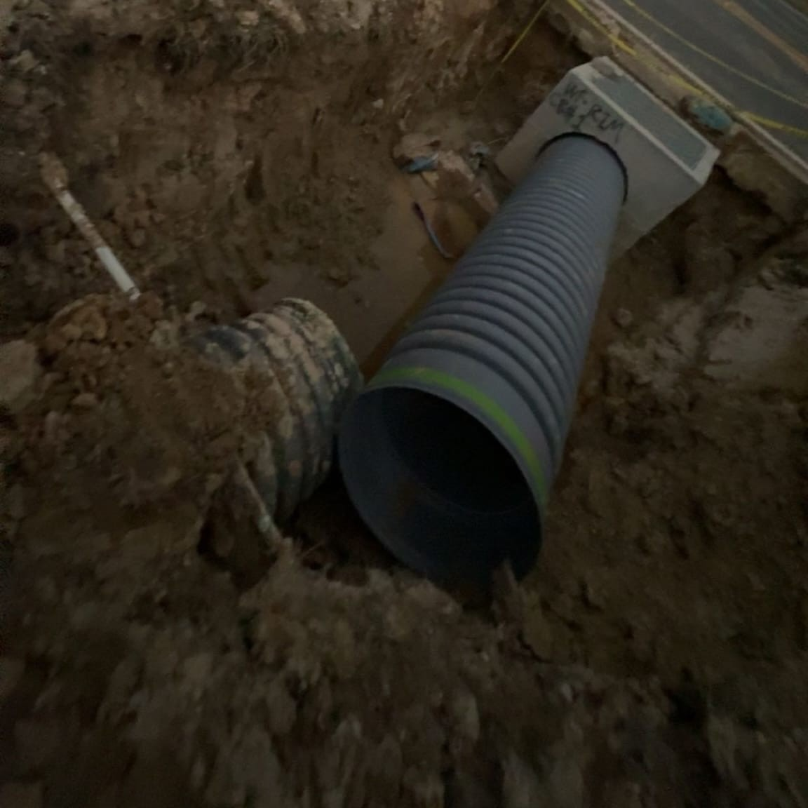
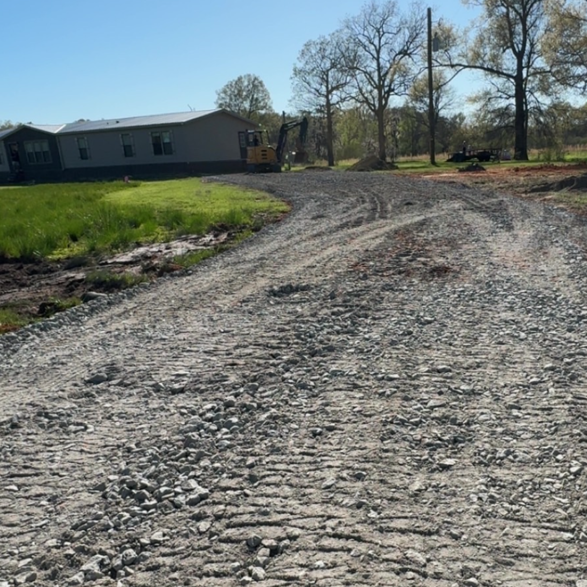

Precision grading, structural pad construction, and professional drainage solutions to build a flawless foundation for your property.

Transform uneven acreage, steep slopes, or rough terrain into perfectly functional, usable land. Utilizing heavy equipment and precise grade checking, we reshape your property topography to prepare for new construction, law installations, or large outdoor projects.
A lasting structure requires a bulletproof foundation. We engineer, clear, dump, and pack highly compacted select fill dirt pads tailored exactly to your construction footprints, preventing structural settling and shifting over time.


Keep standing water away from your structures and foundation lines. We analyze the natural runoff patterns of your land to design and construct robust drainage pathways, install heavy-duty culverts, and manage severe storm runoff efficiently.
Restore, expand, or cut brand new access roads and driveways across your property. From thick limestone applications to recycled crushed concrete, we spread, grade, and pack aggregate surface options that hold up under heavy traffic and weather.
